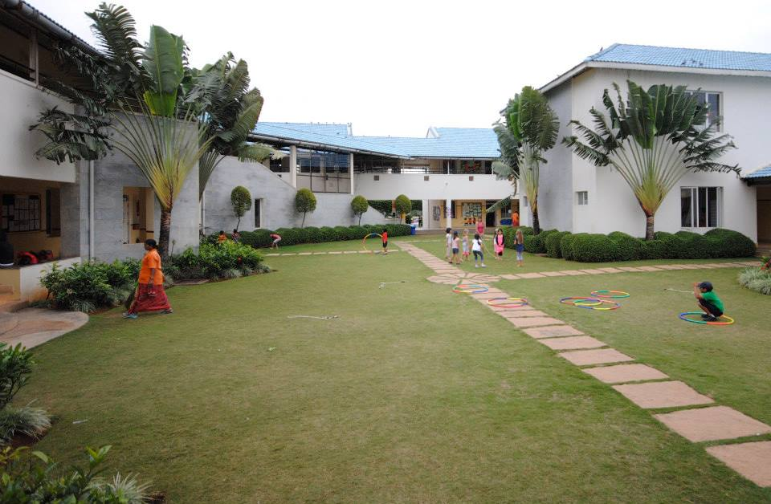
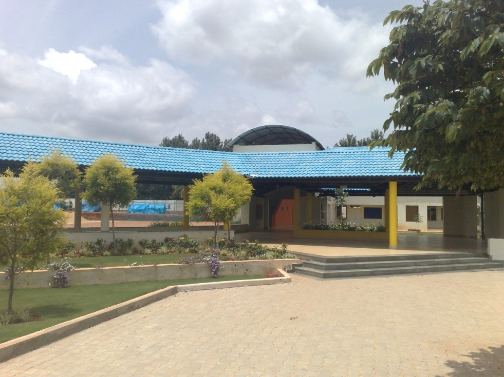
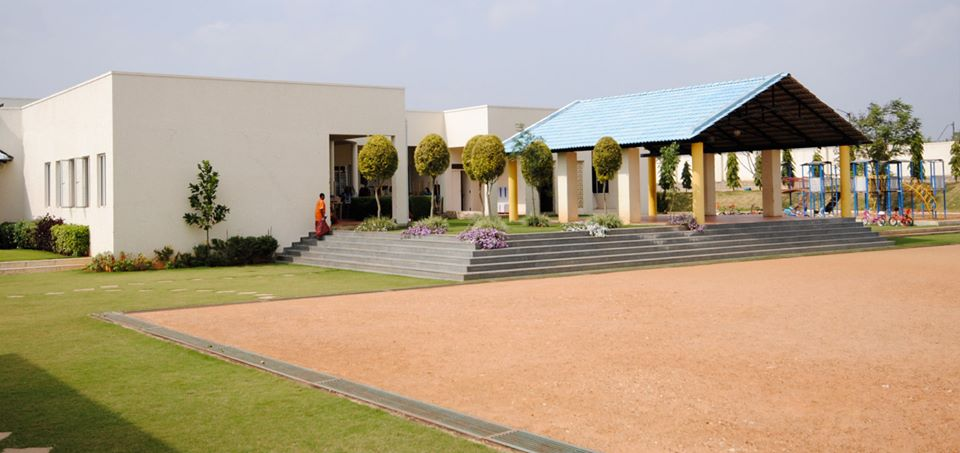
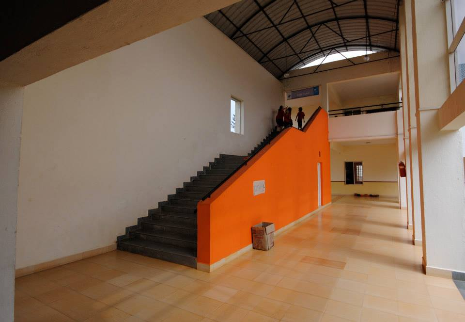
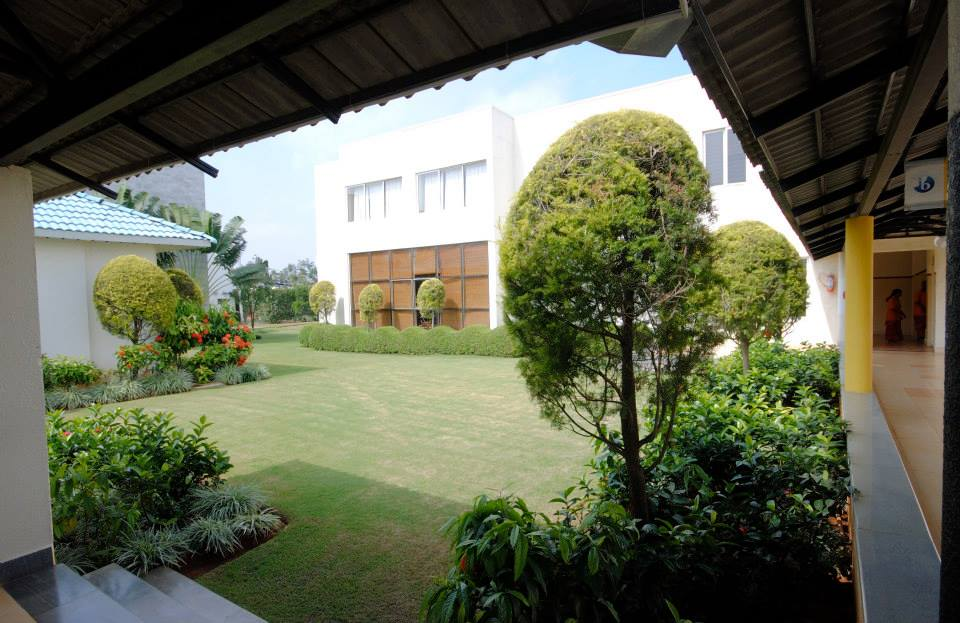
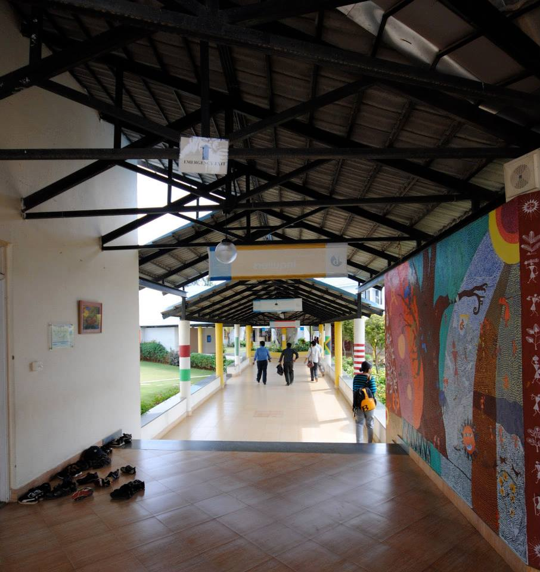
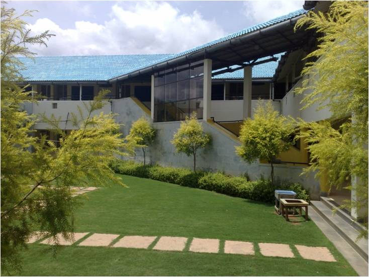

Canadian International School

Overview
Set on a 14-acre campus in Yelahanka, in north Bangalore, Canadian International School is a residential school offering the Canadian curriculum to around 600 students. The school was founded in 1996 and moved to this campus, which we designed, in 2006. It was one of the first residential schools we designed, and it asked a different question of us: how do you design a place where children not only learn, but live?
A day school has a rhythm that begins in the morning and ends in the afternoon. A boarding school has no such edges. Classrooms, dining halls, playing fields and dormitories all become part of one continuous day, and the campus has to support children through all of it — lessons, meals, sport, study, rest and the long evenings in between. For many students, drawn from a diverse community of families, the school would be home for most of the year. The brief, as we understood it, was to make a campus that felt like home without losing the focus and clarity of a place of learning.
The campus has a built-up area of around 2.5 lakh square feet, holding academic buildings alongside residential accommodation. We planned the site so that the academic and residential parts of the school each have their own identity and pace. The teaching spaces are organised for light, ventilation and ease of movement through the busy school day. The residences are quieter and more domestic in scale, giving boarders privacy, rest and a sense of belonging. Between them, the open grounds — lawns, playing fields and landscaped paths — tie the two together and give the school room to breathe.
The school is today an authorised IB World School, and the campus was planned for the inquiry-led teaching that the International Baccalaureate asks for: spaces for group work and discussion, laboratories and studios, and places for independent study alongside conventional classrooms.
One detail of this project has stayed with us, and it is perhaps the one people remember most. The school's identity is built around a distinctive blue. Rather than leaving the logo to letterheads and signage, we wanted the buildings themselves to carry it. We worked with Lafarge to develop a bespoke blue Mangalore tile, made specifically for the school's roofs and matched to the colour of its logo.
The Mangalore tile is one of the most familiar roofing materials in south India — a clay tile on a pitched roof that has sheltered homes, schools and public buildings in the region for well over a century. It sheds heavy monsoon rain, keeps buildings cool and weathers gracefully. Using it tied the school to a regional building tradition suited to Bangalore's climate; making it blue gave the campus an identity entirely its own. From across the grounds, the blue roofs announce the school long before any sign does. The brand and the architecture become the same thing.
That idea — that a school's identity should be legible in its buildings, not only its branding — has informed much of our work since. A school is a community, and communities recognise themselves in the places they share. In a residential school, where children may spend years of their lives, the architecture becomes part of their memory of growing up. We wanted former students to be able to picture those blue roofs long after they had left.
The project also gave us early experience of the particular demands of residential education: planning for pastoral care as well as teaching, for evenings and weekends as well as school hours, and for a community of students and staff who live together on one site. It is experience we have drawn on in many residential campuses since, from The Cathedral Vidya School in Lonavala to Amaatra Academy in Bangalore.
Architects — Kumar & Swamy Architects, Bangalore







Planning a school or campus?
Tell us about your institution — a new campus, an extension, a master plan or a renovation. Every project starts with a conversation.